At a glance
The problem.
Advertisers had several Custom Product Pages (CPPs) for different audiences or storefronts but often relied on intuition or manual tests. The deeper issue wasn't only effort: uneven traffic, timing differences, and changing campaign conditions could undermine the comparison itself.
My contribution.
I owned PM work across further customer discovery, requirements, initial wireframes, prioritization, delivery coordination, acceptance validation, beta feedback and release enablement. Data Science owned methodology; Engineering built integrations and test execution; Design refined the interface.
The outcome.
The capability reached public availability in MobileAction's enterprise offering. Two enterprise customers completed experiments and applied their learnings; subsequent TTR was about 15–20% higher against earlier seasonal periods, subject to the observational caveat above.
The problem wasn't just running a test. It was trusting the result.
Gaming and retail/e-commerce advertisers had multiple CPP options before competitive seasonal periods. Choosing among them could require gut instinct or makeshift comparisons. Manual setup and monitoring cost time, but the more consequential challenge was that test conditions weren't always isolated enough for an actionable answer.
Parallel comparisons
Traffic allocation across simultaneously running variants could be uneven.
Switch comparisons
Sequential creative comparisons could be affected by differences in timing, demand, and campaign conditions.
Reverse comparisons
Some advertisers wanted to compare which ad group or audience worked best with one CPP—not just which CPP won for one ad group.
Making a flawed experiment one click faster wouldn't make it trustworthy.
From advertiser conversations to a clearer product question.
Demand for CPP testing preceded my involvement. I worked with Customer Success to identify relevant accounts and spoke with advertisers about how they were currently testing and interpreting results. We needed to support comparisons people actually wanted to run, reduce operational friction, and make statistical limitations understandable without requiring users to become statisticians.
How might we make CPP comparisons easier to execute, more defensible, and clear enough to influence a real campaign decision?
Four configurations. One understandable journey.
The initial scope covered four customer questions across Parallel and Switch methods, rather than a one-size-fits-all testing template:
01 · Parallel, one ad group / multiple CPPs
Which creative performs best for this ad-group setup?
02 · Parallel, multiple ad groups / one CPP
Which ad-group configuration pairs best with this creative?
03 · Ad Switch
What happens when we rotate ads sequentially inside one ad group?
04 · Ad Group Switch
What happens when we rotate duplicated ad groups for stronger isolation?
- Choose campaign/ad group
- Choose CPPs
- Select method
- Review duration and precision
- Confirm
- Monitor / interpret
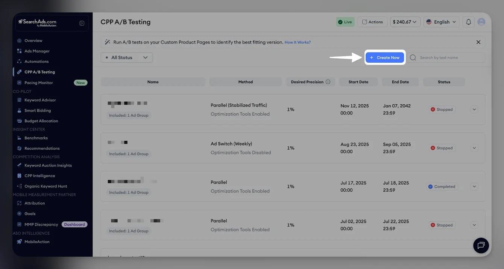
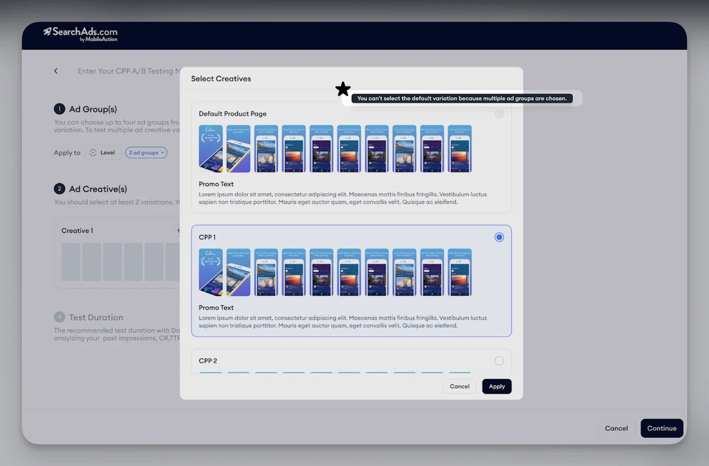
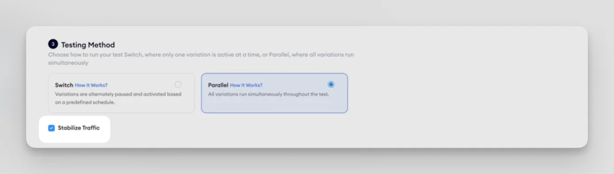
More released-product setup screens
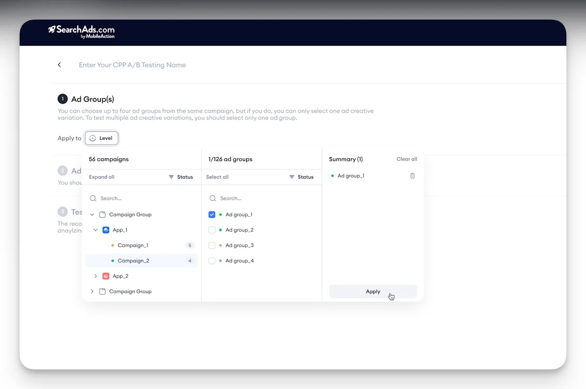
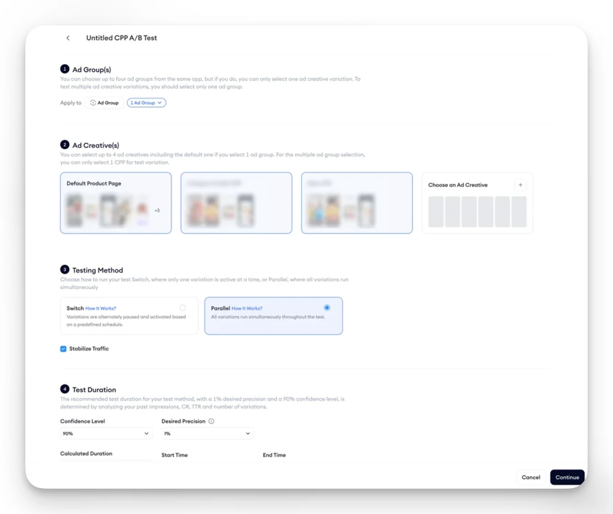
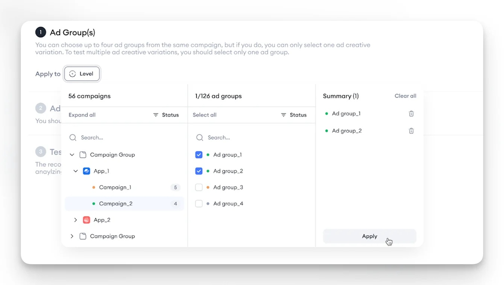
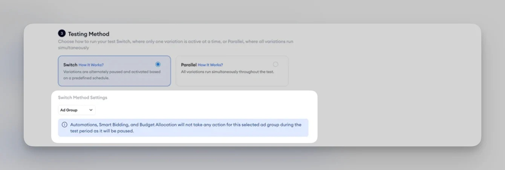
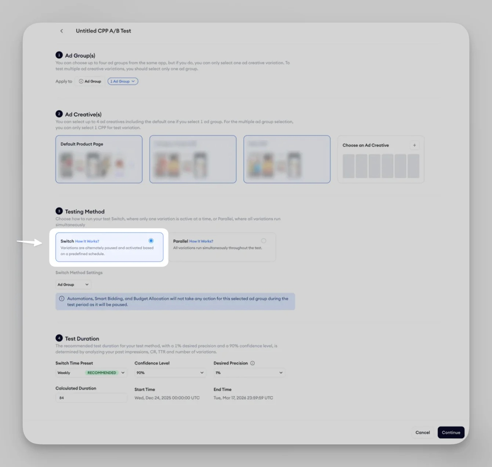
The hard decisions sat behind a simple creation flow.
DECISION 01
Freedom to choose a deadline vs reliable evidence.
- Tension
- Advertisers wanted experiments to fit seasonal timelines, but a meaningful sample depends on traffic, precision, and confidence.
- Decision
- I worked with Data Science, who owned the methodology, to translate established statistical calculations into usable test-duration guidance. For the initial release we favored calculated duration over unrestricted manual end dates. The released flow uses 28 days of historical data and a standard 90% confidence setting.
- Why it mattered
- Letting every advertiser choose any end date could make short tests look authoritative even when they were not.
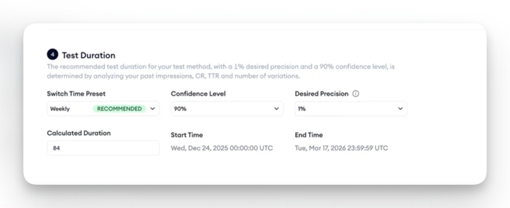
DECISION 02
Running a campaign vs protecting the experiment.
- Tension
- Ongoing bidding and budget changes could affect variants differently.
- Decision
- The system automated test entity creation, pausing and restoration where appropriate. Parallel-mode traffic stabilization could temporarily pause an overexposed variant, while remaining an optional customer choice.
- Why it mattered
- Those changes may be perfectly appropriate for an active campaign, but can undermine an experiment if they affect variants differently.
Execution and isolation details
We introduced automated setup and controls so the system could duplicate test entities, pause originals where appropriate, manage variant status, and restore originals after a test ended or was stopped. Parallel setups isolated testing from certain automation strategies; Ad Switch could offer a choice about preserving or disabling strategies, acknowledging that different advertisers had different operational needs.
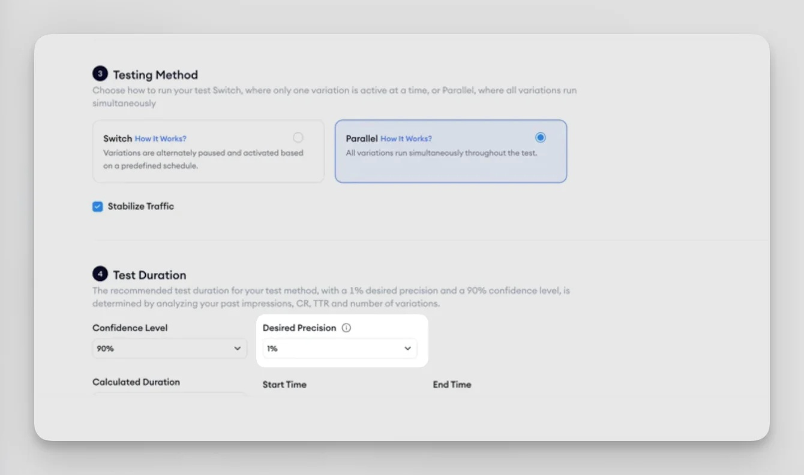
DECISION 03
Useful experiment results vs building another reporting product.
- Tension
- Some users also wanted the entire breadth of campaign analytics inside the feature.
- Decision
- Rather than recreate all campaign analytics, we focused the results on experiment metrics and confidence signals, while keeping deeper investigation in the existing Ads Manager.
- Why it mattered
- It was a deliberate MVP boundary: answer the experiment question first; reuse the broader platform for exploration.
From requirements to a product that could safely run.
I translated discovery into requirements, flows, acceptance criteria, edge cases and initial wireframes, then worked across Design, Backend, Frontend and QA to clarify execution logic and test the delivered experience.
Two implementation realities mattered:
Data arrived overnight.
Tests could be successfully created before any meaningful metrics appeared. We added a scheduled-for-midnight state and clearer expectations about the first results.
Apple Ads status updates weren't immediate.
Switch execution needed buffer periods to account for activation and pausing latency.
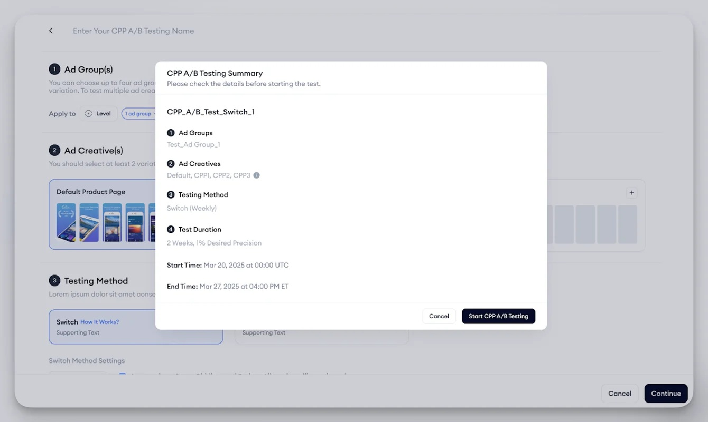
Beta was where our assumptions met real traffic.
We released to a limited group of customers, collected direct and Customer Success feedback, and prioritized changes that affected reliability or real use.
01 · Low-traffic reality
Some statistically defensible estimated durations were impractically long. We introduced minimum traffic eligibility requirements with Data Science.
02 · Confidence interpretation
We clarified what confidence meant and how to read inconclusive results.
03 · Premature confidence
We delayed displaying unstable early signals.
04 · Safe exit
We added a Stop action with a path back to the original campaign setup.
A mathematically correct test can still be a poor product experience.
The real test was whether customers would act on the findings.
After beta fixes, CPP A/B Testing became publicly available to eligible enterprise customers. I collaborated with Sales, Customer Success and Marketing on demonstrations, training, positioning and Help Center materials. Success was not just tests created; I was interested in experiments completed, customers interpreting the results, and decisions that changed as a result.
Two enterprise advertisers, including gaming and retail/e-commerce examples, completed experiments, selected CPPs using the findings, and subsequently observed approximately 15–20% higher TTR compared with previous seasonal periods.
This was a customer follow-up observation, not a controlled estimate of the product's causal lift. Inconclusive experiments also had value by preventing overconfident choices.
The capability became part of MobileAction's enterprise offering and contributed to enterprise commercial conversations.
What I'd do differently.
I would test eligibility assumptions earlier, using representative advertiser traffic and sample experiment simulations before finalizing the experience. That could have surfaced low-traffic accounts whose estimated durations would run beyond the window in which advertisers needed a decision. I'd also test customers' understanding of confidence and inconclusive outcomes sooner.
Good experimentation products don't simply calculate results. They help people understand when the evidence is good enough to act.
Evidence and confidentiality.
Released interface screenshots are from public MobileAction product materials / Help Center, not early PM wireframes, not necessarily original beta UI, and not confidential customer results. The 15–20% TTR follow-up comes from the PM retrospective, not the public Help Center.
Customer identities, internal PRDs and private campaign data are not reproduced here.